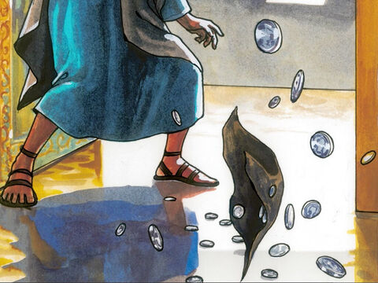
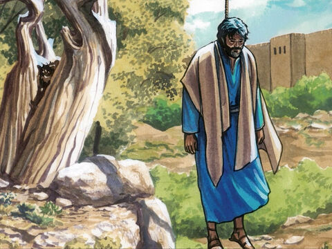
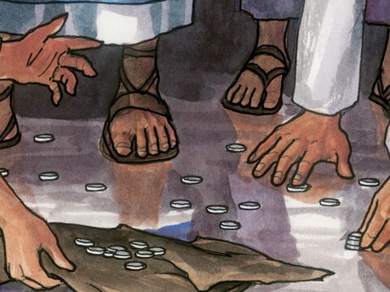
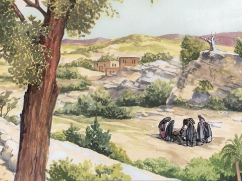

Judas Hangs Himself
Then Judas, which had betrayed him, when he saw that he was condemned, repented himself, and brought again the thirty pieces of silver to the chief priests and elders,
Saying, I have sinned in that I have betrayed the innocent blood. And they said, What is that to us? see thou to that.
And he cast down the pieces of silver in the temple, and departed, and went and hanged himself.
And the chief priests took the silver pieces, and said, It is not lawful for to put them into the treasury, because it is the price of blood.
And they took counsel, and bought with them the potter's field, to bury strangers in.
Wherefore that field was called, The field of blood, unto this day.
Then was fulfilled that which was spoken by Jeremy the prophet, saying, And they took the thirty pieces of silver, the price of him that was valued, whom they of the children of Israel did value;
And gave them for the potter's field, as the Lord appointed me.
Matthew 27:3-10
- 
- 
- 
- 